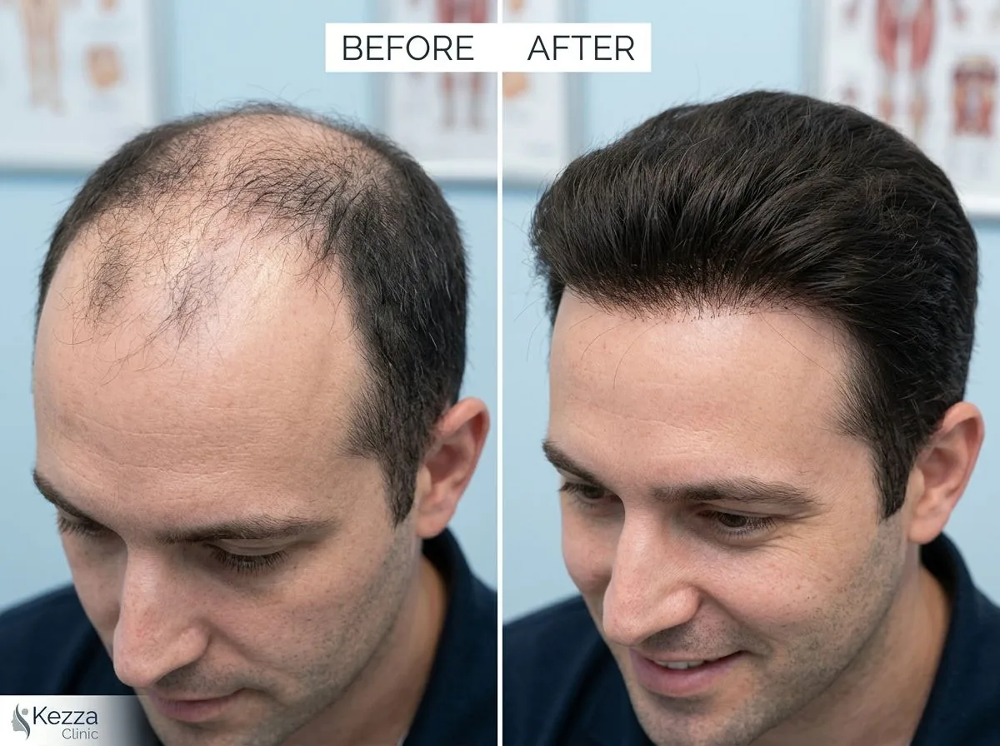
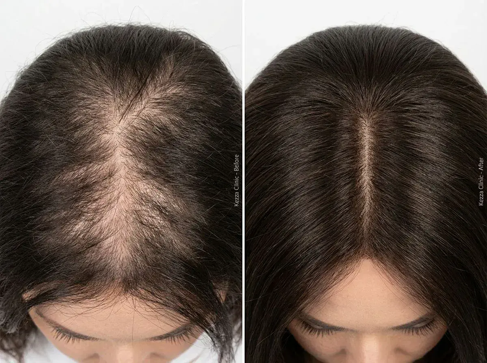

Further reading
- Norwood Scale Explained: When to Choose Surgical vs Non-Surgical Solutions
- Hair Transplant Cost in Jaipur: Comparing Surgery to Long-Term Systems
Doctor-led non-surgical hair replacement delivering instant, natural density without surgery. Custom-tailored micro-lace and poly bio-skin bases crafted with ethically sourced natural human hair.

Explore how your custom hair system is mapped, tailored, attached, and styled for undetectable natural results.
Our senior hair restoration specialist evaluates your thinning pattern, scalp contours, and hair loss progression using dermatological trichoscopy. We create a 3D anatomical contour map of your thinning area to ensure the system hugs your skull with millimeter precision.
We select the ideal base membrane based on your lifestyle, perspiration habits, and aesthetic goals. Then, natural virgin human hair is hand-matched to your existing strands across 6 criteria: shade, undertone, grey percentage, thickness, wave pattern, and density gradation.
The system base is trimmed along your personalized template boundary. The micro-membrane is tailored so the edges transition seamlessly into your natural biological hair, creating a zero-ridge border that cannot be felt by touch.
Depending on your chosen wear schedule, the system is securely attached using FDA-cleared hypoallergenic medical bio-adhesives, water-resistant tapes, or secure micro-clips. The bond is sweat-proof, shower-proof, and withstands sports, running, and swimming.
Our experienced salon stylists cut, layer, and texturize the system together with your own hair. We feather the hairline and sides for a completely undetectable transition, styling your hair to your preferred look—pompadour, side-part, crop, or natural waves.
Tailored non-surgical solutions engineered for every degree of male and female hair thinning.
Ultra-breathable micro-mesh base designed for hot climates and active lifestyles. Offers an undetectable front hairline that looks like real scalp.
Combines a fine mono-mesh center with a durable polyurethane perimeter. Provides exceptional longevity while allowing multi-directional hair parting.
A translucent bio-polymer membrane that clings to the scalp with zero detectability. Follicles appear to emerge directly from your skin.
Specially engineered for female diffuse crown thinning, widening part lines, and hormonal loss (PCOS, thyroid). Blends seamlessly with existing long hair.
Ideal for patients who want flexibility. Easily clip on in 30 seconds before work or events, and remove at night without any adhesive or tape residue.
Full-cap medical grade system for extensive alopecia totalis, universalis, or chemotherapy patients. Crafted with hypoallergenic, ultra-soft silicone linings.
Understanding base thickness, breathability, and maintenance lifespan to choose your ideal fit.
Extremely fine honeycomb mesh that virtually disappears against fair to medium skin tones.
Ultra-thin polymer layer that conforms smoothly to the scalp with zero ridge or texture.
Strong monofilament center mesh with lace front and polyurethane perimeter for durability.
Slightly thicker than Swiss lace with extra tensile strength while preserving realistic hairline edges.
Authentic before-and-after results illustrating seamless hairline graduation and natural scalp density.
Patient arrived with advanced Norwood grade 6 male pattern baldness and low donor density. Fitted with a custom breathable lace-front system blended with his salt-and-pepper sides for an undetectable result.

Female patient experiencing diffuse crown widening and thinning along the middle parting. A custom silk-top hair volumizer topper was matched to her exact hair tone, providing full natural volume in seconds.
Choose the attachment method that fits your daily routine, activity level, and lifestyle.
Clear answers to common questions about non-surgical hair replacement in Jaipur.
Book your confidential consultation with Kezza Clinic's trichology specialists in Jaipur, Sikar, or Ajmer. Get an accurate scalp assessment, explore base materials, and walk out with a personalized styling plan.
Doctor-led assessment for custom hair systems & patches.